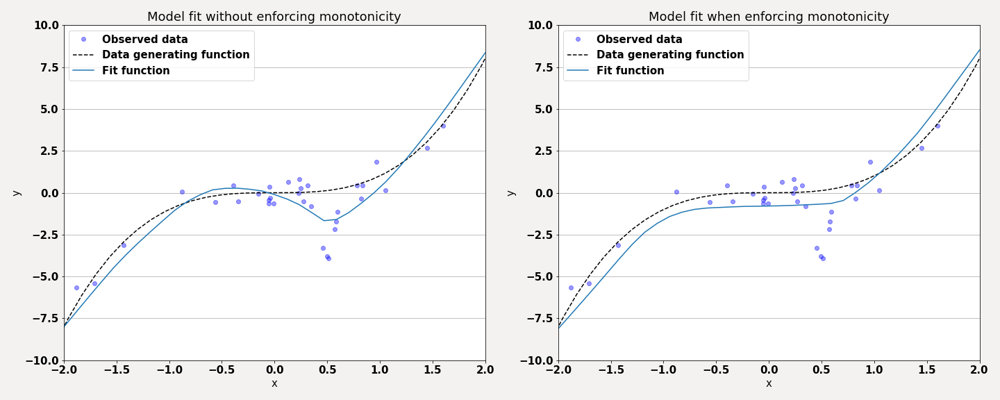
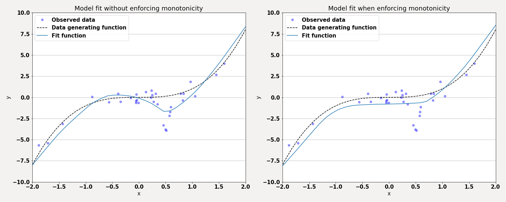

Monotone neural networks
Monotonicity can be a desirable property in many applications, e.g, when we model physical behaviour
where we know that an increase in pressure/calories consumed/rain should yield an increasing
compression/weight/water level. Obtaining a monotone relation from statistical methods fit on a
noisy dataset is not straightforward though. The noise can locally alter the trend in the wrong direction
which can be difficult to account for.
A simple "solution" to this issue when working with neural networks that I wanted to explore was to add a loss on the derivative of the function (you can find a more scientific article that explores this loss here). So if our neural network is denoted by \(f\), the set of monotone features is denoted by \(M\) and if we want an increasing monotone relation then we simply add the loss function $$L = \max(0, -\nabla_M f).$$ The addition of this loss will force the function to become constant or increasing at any points where the fit function would otherwise decrease. After training the function is ideally increasing at all regions of interest. Note that \(\nabla\) is taken with respect to the input features, while when performing gradient descent we want to compute the derivative with respect to the parameters of \(f\). Also note that we can never ensure that the relation will be monotone where we have not observed any data (a hack to extend the region of monotonicity is to add "fake" data points outside of the observed data region and use these during training). My implementation of this loss function can be found on Github.
A small example of the difference between using this loss function and not when training on synthetic data can be seen in the figures below.  Here the true data generating function is monotonously increasing but due to some measurement errors there appear to be a slight trend downwards around 0.5. In the left figure we can see a neural network fit without any loss on the monotonicity of the function, while in the right there is such a loss term. While the fit function in the right figure is monotone, it can be seen that there is a slight downwards bias in the region [-1, 0]. This is not completely surprising given that we are still trying to minimize the mean squared error, and thus the noisy data points at 0.5 will cause the function to try and model the mean of all data points in the region [-1, 0.5] which will yield a worse fit for some of the points in this region. Hence it is likely better to remove the erronous points before fitting the function to begin with. But when it is ambiguous if data points are erronous or not, and if one is working in a high dimensional setting where it can be difficult to visualize the trends, then a method such as this might give a more sensible fit than just applying a mean squared error loss naively.
A simple "solution" to this issue when working with neural networks that I wanted to explore was to add a loss on the derivative of the function (you can find a more scientific article that explores this loss here). So if our neural network is denoted by \(f\), the set of monotone features is denoted by \(M\) and if we want an increasing monotone relation then we simply add the loss function $$L = \max(0, -\nabla_M f).$$ The addition of this loss will force the function to become constant or increasing at any points where the fit function would otherwise decrease. After training the function is ideally increasing at all regions of interest. Note that \(\nabla\) is taken with respect to the input features, while when performing gradient descent we want to compute the derivative with respect to the parameters of \(f\). Also note that we can never ensure that the relation will be monotone where we have not observed any data (a hack to extend the region of monotonicity is to add "fake" data points outside of the observed data region and use these during training). My implementation of this loss function can be found on Github.
A small example of the difference between using this loss function and not when training on synthetic data can be seen in the figures below.  Here the true data generating function is monotonously increasing but due to some measurement errors there appear to be a slight trend downwards around 0.5. In the left figure we can see a neural network fit without any loss on the monotonicity of the function, while in the right there is such a loss term. While the fit function in the right figure is monotone, it can be seen that there is a slight downwards bias in the region [-1, 0]. This is not completely surprising given that we are still trying to minimize the mean squared error, and thus the noisy data points at 0.5 will cause the function to try and model the mean of all data points in the region [-1, 0.5] which will yield a worse fit for some of the points in this region. Hence it is likely better to remove the erronous points before fitting the function to begin with. But when it is ambiguous if data points are erronous or not, and if one is working in a high dimensional setting where it can be difficult to visualize the trends, then a method such as this might give a more sensible fit than just applying a mean squared error loss naively.